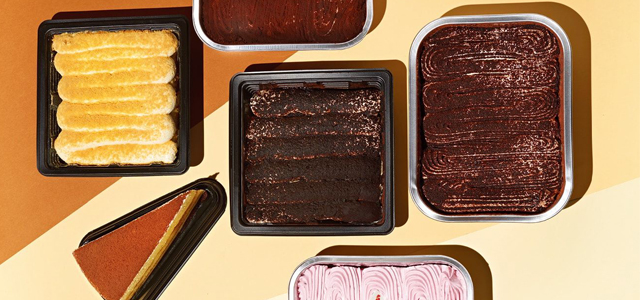

스토리웨이 편의점

스토리웨이 편의점 소개
- 길 위에서 만나는 다양한 삶의 이야기 스토리웨이 편의점
- 스토리웨이는 철도이용객들을 위해 식음료 등 고객 편의를 위한 각종 상품을 판매하고 있는 편의점입니다. 미국 스토리웨이를 국내에 들여와 1989년 5월 6일 서울 송파구 방이동 올림픽 선수촌 아파트 상가에 대한민국 최초의 편의점인 스토리웨이 올림픽점을 오픈하였습니다.
- 스토리웨이는 환하고 깨끗한 쇼핑공간과 다양한 상품, 친절한 서비스를 24시간 연중무휴 제공하는 매력적인 유통형태로 고객들의 폭발적인 사랑은 받으며 눈부신 성장을 이루어 왔습니다.
- 지금 이 시각에도 스토리웨이는 고객을 위해 신상품과 새로운 서비스를 개발하고 점포를 정비하여 국내 최고의 편의점으로 자리매김 할 수 있도록 최선의 노력을 다하고 있습니다.
- 설레는 마음을 안고 떠나는 길, 철도 여행의 동반자
스토리웨이 편의점과 함께하세요~
스토리웨이 운영자 모집
스토리웨이 편의점은 전국 철도역에서 만날 수 있으며 수시로 운영자를 모집하고 있습니다.
-
- 운영자 모집공고
- 홈페이지 > 파트너십 > 상업시설운영
-
- 편의점 납품 문의
- 홈페이지 > 파트너십 > 상품입점상담
-
- 기타 문의
- 홈페이지 > 고객센터 > 고객의 소리
스토리웨이 특징
- 철도이용객을 위한 공공 서비스 제공
- 공익사업인 철도를 기반으로 한 편의점으로 단순 수익보다는 철도이용객들에 대한 공공 서비스 제공을 우선으로 하고 있습니다.
- 철도 고객 특성을 반영한 영업 정책
- 여행 또는 출퇴근을 목적으로 철도를 이용하는 고객들의 특성을 영업시간 및 상품 구성 등 마케팅 전략에 반영합니다.
- 전문 관리인력 발굴 및 육성
- 매장 운영의 전문성을 기하기 위해 매장 전담 인력을 발굴,육성하고 있습니다.